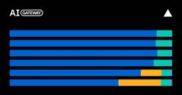

Vercel News
フィード
Daemons can now send traces to Vercel Tracing
Vercel News
can now send OpenTelemetry traces to , allowing you and your agents to inspect background worker operations alongside the rest of your project's traces.Vercel DaemonsVercel TracingVercel provides each daemon with a Unix socket for receiving OTLP/HTTP traces and sets the socket's path in .VERCEL_OTEL_SOCKET_PATHUpgrading to version 2.3.0 or later enables automatic trace export for Node.js daemons using the default configuration. The SDK detects this socket and sends the spans your worker records to Vercel.@vercel/otelThese spans are available through the , which can search by service name within a project and return JSON for your agents.Vercel CLILearn more in the .daemon tracing documentationRead more
1日前

Token Pass now includes $150 in tokens for $30/month
Vercel News
now includes $150 of tokens per month (up from $80) for the same $30 per team per month.Vercel Token PassThe credit applies to featured open-weight models served through , including Kimi K3, Kimi K3.1 Pro, GLM 5.3, GLM 5.3 Flash, and DeepSeek V4.1 Flash.AI GatewayCredit resets each billing period with no rollover. When it runs out, requests using standard AI Gateway keys or OIDC tokens fall back to the team's AI Gateway balance, while requests using Token Pass-scoped keys stop with no overage charges.Token Pass is an Early Access add-on for Pro teams, with limited spots and a waitlist when they fill. To connect your coding agent, run in the Vercel CLI, or use a Token Pass API key if your agent supports AI Gateway.vercel token-passSubscribe to Token Pass in your .AI Gateway dashboardRead more
1日前

Build cache size limit on Vercel increased to 5 GB
Vercel News
The size limit on all has been increased to 5 GB. This allows projects to save more installed dependencies and framework files for reuse between deployments, which can reduce install and build times.build cacheVercel build machinesBuild machines are the compute environments that install dependencies and build your project before deployment. Previously, caches were discarded if they exceeded 1.5 GB on Basic and Standard, 3 GB on Enhanced, or 4.75 GB on Turbo, leaving the next build without a cache.The change applies automatically across all build machine types at no additional charge, with no configuration required.Learn more in the .build cache documentationRead more
2日前
Parallel Decisions now available on AI Gateway for free
Vercel News
from Parallel is now available on and is free through November 23, 2026.Parallel Decisions FastAI GatewayIt searches the live web to answer typed questions about companies, products, policies, and other changing information, returning probabilities and cited evidence for your application to act on.Use it to enrich CRM records, check eligibility, route leads, or verify claims against current sources. Boolean questions return the probability of yes, Choice questions select from options you define, and Score questions assess an ordered rubric. Related questions share context and retrieved evidence in one request.Use as the model name. No separate Parallel account is required. These examples ask the same web-grounded question through the AI SDK, TypeSafe-compatible API, and OpenAI-compatible Decisions API.parallel/parallel-decisions-fastCitations include source URLs, optional titles, and evidence excerpts. They apply to the whole request, rather than mapping individual sources to each answ
2日前
Vercel Sandbox starts up to 4x faster
Vercel News
now initializes up to 4x faster outside the Washington, D.C. () region when reused image data is served from a regional cache.Vercel Sandboxiad1Initialization now reads cached image data close to where the sandbox runs, avoiding round trips to origin image storage in on cache hits. Regional caching supports managed and custom images backed by Vercel Container Registry, including snapshots based on those images.iad1In internal end-to-end benchmarks with , startup time fell about 75% in Paris and from about 3.5s to 1.05s in Seoul. Regions closer to origin storage generally see smaller improvements because requests already travel a shorter distance.Vercel Managed ImagesLearn more in the .Vercel Sandbox documentationRead more
2日前
Vercel Security Review no longer requires a linked Vercel project
Vercel News
You can now scan code changes for vulnerabilities with in GitHub repositories that have not yet been linked to a Vercel project.Vercel Security ReviewBy default, Security Review covers all unlinked repositories the Vercel GitHub App can access in a connected GitHub account. You can limit coverage to selected connected accounts or individual repositories in Agent settings. Once enabled, each push to a covered repository automatically triggers a review of its code changes.Security Review checks commits directly in repositories with Security Review enabled, without requiring a Vercel project or deployment. When a push creates a deployment for a linked project with Security Review enabled, the review uses the additional project and deployment context.Connect the account in your team’s , then enable Security Review in .Git settingsVercel Agent settingsGet started with the .Security Review documentationRead more
2日前

Kimi K3.1 Pro is now available in Token Pass
Vercel News
now includes , Moonshot AI’s most capable model for coding and agentic workflows, with vision, tool use, and a 1M context window.Token PassKimi K3.1 ProToken Pass is an Early Access subscription for Pro teams that includes Kimi K3, GLM 5.3, GLM 5.3 Flash, and DeepSeek V4.1 Flash, with more models to come. For $30 per team per month, you get $150 in monthly credit to use in coding agents connected to , including , , , and , as well as agents you build with the AI SDK. Requests served through Token Pass have zero data retention.AI GatewayfxPiClineCommand CodeSubscribe on the in your team's AI Gateway dashboard, then select in your connected agent's model picker.Token Pass pagemoonshotai/kimi-k3.1-proRead more
2日前
Workflow SDK 5: built for production
Vercel News
When we first launched Workflow SDK, the goal was simple: write regular async JavaScript, and let the SDK keep it running through crashes, deployments, and long waits.Last year, , with the world-class developer experience Vercel is known for. Then we watched what our customers built with it.we shipped just thatMore than 4 billion steps and 700 million runs later, two clear patterns have emerged. As those workloads matured, Workflow matured with them. Our priorities have always been security, reliability, and performance. Here’s how Workflow SDK 5 delivers on all three.The Workflow stores step arguments and return values so a run can recover after a crash or deployment. That data can include sensitive customer information, model context, credentials, and tool-call results. Persisting it requires strong protection.event logWorkflow SDK , before it leaves your code. Workflow and step inputs and outputs, hook payloads, and stream data are encrypted with AES-256-GCM, using a unique key for
2日前

Vercel Sandbox now supports managed npm credentials
Vercel News
can now install your team's private npm packages using credentials stored in team . Custom registries such as GitHub Packages and JFrog Artifactory are also supported.Vercel SandboxShared Environment VariablesPass when creating a sandbox to let it use your team's existing npm credentials.credentials: { npm: true }Tokens stay outside the sandbox. The firewall adds authentication to install requests sent to your configured registries, so a coding agent can install dependencies without seeing the tokens.Update your Sandbox SDK or CLI to the latest version.Read the to get started.npm credentials documentationRead more
3日前

Gemini 4 Hydrogen now available on AI Gateway
Vercel News
is now available on AI Gateway.Gemini 4 Hydrogen from GoogleGemini 4 Hydrogen succeeds Gemini 3.8 Flash, improving agentic coding, knowledge work, and tool use while staying in the same latency class. It handles longer engineering tasks and produces better-researched documents, spreadsheets, and presentations in fewer agent steps.Hydrogen follows system instructions, formatting requirements, and task boundaries more closely, with more reliable tool orchestration across long conversations. Improvements in visual reasoning and technical problem-solving support multimodal workflows, while stronger grounding reduces unsupported claims in search-backed answers and invented tool or test results in coding reports.Use as the model name:google/gemini-4-hydrogenTo use it in Claude Code, Codex, Cursor, and more, install the latest Vercel CLI and run setup:Then select in the agent. See the for details.google/gemini-4-hydrogencoding agents guideTry Gemini 4 Hydrogen in the .model playgroundAI Gatew
3日前

Inkling 2 Small now available on AI Gateway
Vercel News
is now available on AI Gateway. The multimodal reasoning model supports coding agents, visual understanding, and professional knowledge work, with text and image inputs and text output.Inkling 2 Small from Thinking MachinesInkling 2 Small can work through extended coding tasks, use tools to gather information, and turn that information into documents, spreadsheets, and other deliverables. Its visual capabilities include reading text in images, interpreting charts and infographics, and inspecting interfaces. For visual development, it can use screenshots to check the output of the code it writes and guide the next revision.Use as the model name:thinkingmachines/inkling-2-smallTo use it in Claude Code, Codex, Cursor, and more, install the latest Vercel CLI and run setup:Then select in the agent. See the for details.thinkingmachines/inkling-2-smallcoding agents guideTry Inkling 2 Small in the .model playgroundAI Gateway provides a unified API for calling models, tracking usage and cost, a
3日前

Python 3.15 now available as a Vercel Managed Image
Vercel News
Python 3.15 is now available as a Vercel Managed Image for .Vercel SandboxTo run a sandbox with Python 3.15, select using the option in either SDK or the flag in the CLI.vercel/sandbox/python:3.15image--imageThe default universal image () still ships Python 3.14 and is scheduled to switch to Python 3.15 on December 16, 2026.vercel/sandbox/universal:latestLearn more in the .Vercel Sandbox images documentationRead more
3日前
Gemini Decision 1 now available on AI Gateway
Vercel News
is now available on AI Gateway. The multimodal decision model works with text, images, audio, video, and PDF documents, returning Boolean probabilities, choices, and scores. Use it to route requests, check policies, filter agent tools, or rank results without generating output tokens.Gemini Decision 1 from GoogleUse with the AI SDK, TypeSafe-compatible API, or Decisions API.google/gemini-decision-1PDF, audio, and video inputs are supported through AI SDK 7. The TypeSafe-compatible and Decisions APIs support text and image inputs.AI Gateway provides a unified way to access models and track usage and cost. Decision calls appear in and count toward alongside other model requests.logsbudgetsSee the for Choice, Score, and Boolean questions. To pick a decision model, browse the or read our .decision documentationavailable modelsdecision model guidesRead more
4日前
Gemini 4 Carbon now available on AI Gateway
Vercel News
is now available on AI Gateway. It is available at 50% off through November 30, 2026:Gemini 4 Carbon from GoogleGemini 4 Carbon is built for complex software engineering, sustained agentic work, and cybersecurity defense. It has a 1M-token context window for working with large codebases and long inputs.On engineering tasks, Carbon carries demanding work through multiple stages, with improvements in coding, full-stack web development, and scientific reasoning. Its cybersecurity capabilities span finding vulnerabilities, validating their risk, and developing patches. more reliable execution of multi-step plans, fewer unsupported claims, and better collaboration when requirements are ambiguous, helping agents follow through while respecting project constraints.Google also reportsUse as the model name:google/gemini-4-carbonTo use it in Claude Code, Codex, Cursor, and more, install the latest Vercel CLI and run setup:Then select in the agent. See the for details.google/gemini-4-carboncoding
5日前

MiniMax H3 Image and Highspeed now available on AI Gateway
Vercel News
and are now available on AI Gateway. Generate images from text or edit existing images with one API key and no separate MiniMax account.MiniMax H3 ImageMiniMax H3 Image HighspeedBoth models support custom dimensions and aspect ratios, including 2K and 4K outputs. Use a text prompt to create a product visual or illustration, then pass the image back with instructions to change colors, subjects, or composition. The Highspeed variant offers faster generation with the same generation and editing options.Use or as the model name:minimax/minimax-h3-imageminimax/minimax-h3-image-highspeedTo edit the generated image, pass it back with an instruction:Both models also support the OpenAI-compatible and routes. See the for details./v1/images/generations/v1/images/editsimage generation guideTry MiniMax H3 Image in the .model playgroundAI Gateway provides a unified API for calling models, tracking usage and cost, and managing access with one API key. View requests and spend in your dashboard.AI Gate
5日前

Speed Insights and Web Analytics now support custom environments
Vercel News
and now fully support .Speed InsightsWeb Analyticscustom environmentsPreviously, data captured on deployments to a custom environment was attributed to the Preview environment. That data is now attributed to the custom environment it came from, so you can track performance and traffic for staging, QA, or canary environments separately from Production and Preview.You can view this data in several places:This change only affects how data is attributed. No new data points are collected, and no configuration changes are needed.Custom environments are available on Pro and Enterprise plans. Learn more in the .environments documentationRead more use the Environment dropdown in Speed Insights and Web Analytics to pick a custom environmentDashboard: query it with the commandCLI:vc metrics filter and break down by environmentQuery builder: query it programmatically (Web Analytics only)Aggregation API:
5日前

Vercel Sandbox snapshot creation is now up to 10x faster
Vercel News
now creates snapshots up to 10x faster. Median time to snapshot is under 0.4 seconds, down from 4.4 seconds. Snapshot restore speed has also improved by 50% from 500ms to 250ms at p50.Vercel SandboxSnapshots are now able to write and restore by re-using frames within the Vercel Hive Snapshot (VHS) format. VHS now indexes data in a more efficient way which means that more read and write operations can be done in parallel. Snapshots can now restore more of your Sandbox base image in parallel with user data, leading to overall faster operations.Persistent sandboxes, the default, snapshot automatically when a session stops and resume from the latest snapshot. This applies to all new snapshots, with nothing to configure. Existing snapshots keep the previous format.Learn more in the .snapshots documentationRead more
5日前

Decision models take 26% of requests; Anthropic now wins new teams 2:1
Vercel News
AI Gateway Production Index — November 2026Every month, routes more than 100 trillion tokens between production applications and AI labs. That traffic gives us a view of what AI usage looks like in today’s enterprise and startup landscape across language, decision, voice, image, and video models. We publish it here monthly. See the Production Index reports from , , and .AI GatewayAugustSeptemberOctoberProduction AI is splitting into two jobs: generation and judgment. Until recently, when software needed to make a quick call, a team could use either a fixed rule that was cheap but rigid, or a language model that was smart but slow and expensive.Decision models are now a third option. They classify, score, or pick between choices instead of generating text, and cost about a seventieth as much per request as a language model.They arrived on AI Gateway in mid-September, and there are now 15 decision models available from eight different vendors. In October, nearly a third of paid teams on
6日前
Build disk space on Vercel increased to 64 GB
Vercel News
Disk space for has increased from 32 GB to 64 GB on Basic and Standard machines, matching the capacity already available on Enhanced and Turbo.Vercel buildsThe additional space provides more room for the packages your project uses and the files generated during a build, reducing the risk of running out of disk space.The change applies automatically across all plans and build machine types at no additional charge, with no configuration changes required.Learn more in the .build machine documentationRead more
6日前
Claude Fable 5.2 now available on AI Gateway
Vercel News
from is now available on .Claude Fable 5.2AnthropicAI GatewayFable 5.2 is built for open-ended technical work and improves on earlier Fable models in coding, reasoning, and vision. It can run long, ambiguous tasks unattended, and works as an orchestrator that hands simpler tasks to smaller models, or as an advisor that other Claude models consult on harder problems. It also communicates more clearly and generates output faster than earlier Fable models. Effort runs from to , with as the API default.lowmaxhighFable 5.2 has cybersecurity and biology safety classifiers enabled. Access to Claude Fable 5.2 requires data retention. Anthropic does not support for the model. Prompts and completions are retained for 30 days and are not used to train Claude. If your team has ZDR turned on, AI Gateway returns an error instead of sending the request to Fable 5.2.Zero Data RetentionTo keep requests served when a classifier is triggered, use . Add a array to , and AI Gateway tries each model in orde
6日前
GLM 5.3 Flash is now available in Token Pass 1
1
Vercel News
now includes , alongside Kimi K3, GLM 5.3, and DeepSeek V4.1 Flash (with more models to come). GLM 5.3 Flash is Z.ai's native multimodal coding model with a 1M-token context window.Token PassGLM 5.3 FlashToken Pass is a $30/month subscription on Pro teams that grants $150 in monthly credit and runs through . Use it with any coding agent such as , , , etc. or build your own with the AI SDK, with Zero Data Retention enabled by default.AI GatewayfxPiClineCommand CodeAdd GLM 5.3 Flash from the in your team's AI Gateway dashboard, or read the for setup.Token Pass pageToken Pass documentationRead more
6日前
Muse Ember now available on AI Gateway
Vercel News
from is now available on . It is a lightweight reasoning model for the high-volume parts of an agent run, such as coding sub-tasks, tool calls, and document analysis.Muse EmberMetaAI GatewayMuse Ember handles the bounded tasks agents repeat many times in a single run, like implementing a helper function, calling a tool, or summarizing a document.The model accepts text, image, and video input with a 1M-token context window, so an agent can pass it code, screenshots, documents, and clips in the same run. Tool calling lets your application feed each result into the next step. Reasoning effort is adjustable from to .minimalmaxCall it through the , the , , and APIs, or a connected to AI Gateway.AI SDKChat CompletionsResponsesAnthropic Messagescoding agentUse as the model name:meta/muse-emberTo use it in Claude Code, Codex, Cursor, and more, install the latest Vercel CLI and run setup:Then select in the agent. See the for details.meta/muse-embercoding agents guideTry Muse Ember in the .model
6日前
Vercel Container Registry now supports 2 GB compressed image layers
Vercel News
now supports compressed image layers of up to 2 GB each, up from 500 MB, the total image size limit stays 15 GB. Vercel Container RegistryThe registry works with standard workflows like , , and , and pushing an image creates the repository on the fly.docker pushdocker pulldocker tagRepositories can be for read-only pull access by any Vercel team, or up to 100 from the dashboard or with . The Vercel Managed Images that Vercel Sandbox runs on are served from ordinary public repositories, built with the same public-repository feature any team can use for its own images.made publicshared with specific teamsvercel vcr permissionsManage repositories, images, and tags with the in Vercel CLI v58.3.0 or later, and log CI workflows in from GitHub Actions with the using GitHub OIDC, which removes the need for long-lived registry credentials. If background optimization of a pushed image fails, the image shows an error status in the dashboard, and pushing the same image again retries the conversion
6日前

Workflow SDK now writes over WebSockets on Vercel
Vercel News
The now sends event writes and stream writes to over a WebSocket by default, replacing one HTTP request per write, or per write group for streams. No code change is needed beyond upgrading to or later.Workflow SDKVercel Workflowsworkflow@5.2.0Once you deploy the upgrade, new runs use it. In-flight runs finish on the deployment they started on.Existing streaming code works as is. A step that writes a burst of chunks, like AI tokens, sends them over the WebSocket once it opens:In a replaying an AI agent's token stream, v5.2.0, which writes streams over a WebSocket by default, delivered the full response 4.2× faster than v4.8.12, with no chunk delayed over a second.benchmarkEvery step start and completion is an event write, now sent over the WebSocket, so workflows with many steps make fewer HTTP requests. The added efficiency also improves performance and reduces costs. The queue handler opens the connection for every delivery. Read the to get started. If you're on 4.x, start with the ,
6日前
DeepSeek V4.1 Flash 1017 Ultrafast now available on AI Gateway
Vercel News
is now available on AI Gateway through Fireworks. This model can generate upwards of .DeepSeek V4.1 Flash 1017 Ultrafast1,000 tokens per secondUltrafast serves the October 17 update of DeepSeek V4.1 Flash through Fireworks' accelerated serverless endpoint. It is suited to interactive coding, reasoning, and agentic workflows where applications need to generate output and move to the next step quickly.The model has a 1M-token context window for working with large codebases and long inputs. It is available in public preview without a waitroom or session time limit.Use it by setting as the model name:deepseek/deepseek-v4.1-flash-1017-ultrafastTo use it in Claude Code, Codex, Cursor, and more, install the latest Vercel CLI and run setup:Then select in the agent. See the for details.deepseek/deepseek-v4.1-flash-1017-ultrafastcoding agents guideTry DeepSeek V4.1 Flash 1017 Ultrafast in the .model playgroundAI Gateway provides a unified API for calling models, tracking usage and cost, and conf
8日前

AI Gateway adds DeepSeek Search and Fetch tools
Vercel News
and are now available through . Search finds relevant pages with titles, URLs, and summaries. Fetch retrieves page content as Markdown for your model to read.DeepSeek SearchDeepSeek FetchAI GatewayUse both tools with any model that supports tool calling, using one AI Gateway API key. No separate DeepSeek account is required, and you can keep the same tools when switching model providers.These helpers are available in AI SDK 6.0.321 and later on v6, or 7.0.160 and later on v7. Update with and set your . To combine search and page retrieval, pass both helpers in :pnpm add ai@latestAI_GATEWAY_API_KEYtoolsYou can also use alternative search tools with DeepSeek Fetch if DeepSeek Search fails:Search fallback is model-directed, so provider order and retry limits are best effort. DeepSeek Fetch can retrieve a result URL from any of these search tools.Search and Fetch each cost $0.75 per 1,000 billable requests. Failed requests, timeouts, and empty results have no tool charge. Model tokens are
8日前

Chat SDK agents can now stream generative UI with json-render
Vercel News
You can now stream generative UI from your agent with .Chat SDKjson-renderWith a typed catalog of components, the agent writes a JSON spec that converts into a Chat SDK card. Each adapter then posts the card in its platform’s native format, such as Block Kit on Slack and Adaptive Cards on Teams.json-renderThe catalog covers tables, charts, buttons, and more, so there’s no separate tool to build and maintain for each message shape. posts the card once its root element has content and updates the message as new elements stream in. Edits go out at most once every 500 ms by default, which matches Chat SDK’s streaming interval. Once the stream ends, the message shows the final, validated card.streamCard checks every element’s props against its component schema and throws for an invalid spec. Each problem gets its own readable issue, so you can send the list back to the model for a corrected spec.toCardCardSpecErrorPlatforms cap what a single message can hold, and Chat SDK adapters degrade c
8日前

Vercel CLI can now set new projects to expire
Vercel News
You can now set a new project to expire when you deploy it with . Expired projects are deleted automatically, so prototypes, demos, and test apps don't need cleaning up by hand.Vercel CLIRun with and a duration:vercel deploy--delete-project-afterSupported durations are , , , , and , and the CLI prints the date and time when the project expires. The flag only applies when creates the project. If you deploy to an existing project with the flag, its expiration doesn't change and the CLI prints a warning.1h1d1w2w30dvercel deployTo remove a project's expiration, run :vercel project keepUpdate Vercel CLI to or later to get started. Learn more in the .v65.12.0vercel deploy documentationRead more
8日前
Vercel Tracing is now generally available
Vercel News
is now generally available on all plans. You can now search and inspect traces from the or the , and new Next.js projects get tracing by default. Pricing is unchanged from the beta.Vercel TracingdashboardVercel CLIIn beta, you could only open a trace per request from the Logs page. The new Traces page shows every trace and span in one place, for a project or your whole team. Switch between a Spans list and a Traces list, filter each, and search with (KQL). A Live mode streams new traces as they arrive. A query like narrows to slow database spans by name and duration.Kibana Query Languagespan.name:db* AND span.duration > 500The Traces page uses the same KQL as , so a query built in the dashboard runs in the CLI unchanged. Search covers every project in your team, or one project with the flag. Inspect a single trace with , and manage a project's sampling rules with .vercel traces search --query--projectvercel traces inspect <request-id>vercel traces configIn beta, nothing was collected u
8日前
Token Pass credit now applies automatically across AI Gateway
Vercel News
credit now applies automatically to included model usage through , whether a request authenticates with an API key, OIDC token, or login. No dedicated Token Pass API key is required, though you can still create one from the dashboard or the CLI for keys scoped only to featured models and providers.Token PassAI GatewayfxWhen Token Pass credit runs out for the billing period, requests from a standard key or OIDC token fall back to your team's AI Gateway credits. Token Pass keys still stop until the next billing period.Requests served through the Token Pass provider remain (ZDR). Fallback requests follow your team's setting. With enabled, they route only to ZDR providers.Zero Data Retentionteam-wide ZDRAvailable now for Token Pass subscribers on Pro teams. If you created a Token Pass key during setup, switch to a standard API key or OIDC token to get fallback. Learn more in the .Token Pass documentationRead more
9日前
Ampersand from Humans& now available on AI Gateway
Vercel News
is now available on AI Gateway for free through November 13, 2026.Ampersand from Humans&Ampersand is a model for group conversations. Humans& built Ampersand on 's open-weight GLM 5.3 and trained it with reinforcement learning in simulated group conversations that run for up to months of simulated time. Most chat models are built for one person asking a question and the model answering it. Ampersand is trained to take part in a conversation between several people. It reads every message, including the ones not addressed to it, and after each one it decides whether to reply or stay quiet.Z.aiIt is designed to understand individual and shared goals, help people work through disagreements, and recognize when a contribution would be useful. That can mean asking a clarifying question, sharing relevant context, or waiting while people respond to one another.For example:Your application exposes these actions as caller-defined . delivers a contribution, while leaves the conversation quiet unti
9日前
Vercel Schedules is now in public beta
Vercel News
is now in public beta on all plans. Run tasks on a recurring cadence or at a single point in time, in production, preview, or custom environments.Vercel SchedulesSchedules in can target a private Vercel Function, an HTTP path, or a Vercel Queue topic, and schedules created at runtime target a Queue topic. Any schedule can be enabled, disabled, or run on demand without redeploying.vercel.jsonDefine a static schedule:Adding a trigger makes the function private. It has no public URL and only the Vercel schedule infrastructure can invoke it.schedule/v1betaHandle the dispatch:Create a schedule at runtime:Schedules is the successor to . Existing Cron Jobs continue to work, and the covers moving them to Schedules. Schedules also power and experimental scheduled tasks in .Cron Jobsmigration guidedynamic schedules in EveNitro projectsVercel Schedules is billed starting at $5 per 1M runs and $10 per 1M creations on Pro and Enterprise. Hobby includes 500 schedule creations and 5,000 runs per mont
9日前
Gemini Omni 1.2 Flash now available on AI Gateway
Vercel News
from Google is now available on AI Gateway. Generate videos from text prompts with one API key and no separate Google account.Gemini Omni 1.2 FlashGemini Omni 1.2 Flash generates 3–15 second videos with native audio and edits 3–15 second source clips with up to six reference images. Extend videos by 3–10 seconds per call, up to 30 seconds total, or refine generated clips in follow-up calls using . Output supports 360p, 720p, 1080p, and 4K in 16:9 or 9:16. Use or in to receive the generated video as a file.previousInteractionIdgenerateTextstreamTextAI SDKUse as the model name. This example generates a three-second, 360p clip and saves it as :google/gemini-omni-1.2-flashvideo.mp4With , read to handle generated files as they arrive. The video is delivered as a completed file:streamTextfullStreamAI Gateway provides a unified API for calling models, tracking usage and cost, and configuring retries, failover, and performance optimizations for higher-than-provider uptime. It includes built-in
10日前
Workflow SDK adds idempotent starts
Vercel News
The 's function can now admit a run and claim a hook in one atomic step. Duplicate workflow starts fail safely. The atomic start replaces the previous -then- pattern, whose gap between the lookup and the start left a documented duplicate-start race.Workflow SDKstart()getHookByToken()start()The claimed Hook exists from the moment the run is admitted, so works even before the run begins executing, and early payloads are buffered and delivered in order. Inside the workflow, with the same token binds to the already-claimed hook: guaranteed, registering nothing new, adding no step, and resolving to .resumeHookcreateHook({ token })getConflict()nullThe token is the idempotency key, and it comes from your own domain: an order ID, an invoice ID, an import ID, or a request ID. The token alone guarantees idempotency. Exactly one run owns it, and a duplicate throws carrying the owner's and never becomes a run. The workflow doesn't have to open the hook at all, and if it never does, the token was o
10日前
Kimi K3.1 Pro now has more ZDR providers on AI Gateway
Vercel News
and its higher-speed version, , are now available on from more (ZDR) providers. Until today, was the only provider serving either model.Kimi K3.1 ProKimi K3.1 Pro HighspeedAI GatewayZero Data RetentionMoonshot AIK3.1 Pro improves on earlier Kimi models in coding, 3D modeling, and financial analysis, and can carry long agent runs from a small fix to a full project. Both models have a 1M-token context window and accept image input, and Highspeed suits interactive work like coding agents, where response time matters.Call either model through the , the , , and APIs, or a connected to AI Gateway. For Highspeed, use in place of the model name below.AI SDKChat CompletionsResponsesAnthropic Messagescoding agentmoonshotai/kimi-k3.1-pro-highspeedUse as the model name:moonshotai/kimi-k3.1-proSetting in the gateway requires ZDR for that request. To require it for every request your team sends, including requests from coding agents, turn on ZDR in the . With either one on, AI Gateway routes only to
10日前
Introducing Vercel Schedules
Vercel News
Cron jobs are useful for work that needs to happen regularly. You can use them to do things such as back up your database on a schedule, or keep data in sync between two systems.You define them once in code and then can update them by editing their config and redeploying. But today, agents interact with users as work evolves, and schedules need to be updated in real time.We built Vercel Schedules to allow agents and applications to create, change, or cancel one-time and recurring schedules through code, without redeploying.Schedules builds on the static approach used by , but are designed to let users and agents decide when work should happen while your application is still running. A schedule tells Vercel when to trigger a task and where to send it. Your application provides the code that carries out the work.Vercel Cron JobsYou can use schedules for both static and dynamic jobs:You can also test scheduled work on before running it in Production.Preview deployments and in custom envir
10日前
Vercel token scanning expands to more public sources
Vercel News
Vercel has partnered with to expand automated detection and revocation of publicly exposed Vercel tokens.Truffle SecurityRevoking exposed credentials helps prevent unauthorized access to your projects and unexpected costs from unauthorized use of services such as and . If your token is revoked, you’ll receive an email from us explaining why.Vercel SandboxVercel AI GatewayTruffle Security reports tokens exposed in public sources including GitHub, GitLab, Docker, npm, PyPI, Hugging Face, Android APKs, and Firefox Add-ons. Vercel has revoked hundreds of tokens reported by Truffle Security.A separate Vercel scanner now checks each new monthly dataset of public web pages and automatically revokes any exposed Vercel tokens it finds.Common CrawlLearn more about creating tokens, setting their scopes, and managing them in the .access token documentationRead more
10日前
Vercel Security Review now in public beta
Vercel News
is now in public beta for Pro and Enterprise teams. Once enabled, every push to a connected GitHub repository is automatically reviewed for vulnerabilities, and findings are reported in the .Vercel Security ReviewVulnerabilities dashboardSecurity Review runs automatically when code is pushed to a connected GitHub repository. Because reviews start from push events rather than pull requests, direct and force pushes to your production branch are reviewed as well. Every project affected by a single push is reviewed together.Each finding records the project, environment, branch, and commit, with a summary, a suggested fix, and an AI-generated severity rating.Security Review adds its own GitHub check to each commit it reviews. When there's a pull request, it also posts findings as review comments that link back to each finding. On public repositories, finding details stay in the dashboard.Clicking on a vulnerability report hands the finding to Vercel Agent, which proposes a fix and opens a p
11日前
Vercel CI no longer requires a linked Vercel project
Vercel News
Vercel CI can now run on a GitHub repository that has no Vercel project. Until now you had to create an empty project just to connect the repository.To enable it, you need:Then, from a clone of the repository, run:CI is enabled for the team your CLI is set to. Pass to use a different one. From the next push, tasks run as configured in your repository.--scope <team>Private GitHub repositories only. Public repositories and other Git providers are not yet supported.Read the to configure tasks.Vercel CI documentationRead moreThe Vercel GitHub App installed with access to the repositoryYour GitHub account connected to your Vercel accountWrite or admin permission on the repository
11日前
How Mercor ships internal apps and billions of production tokens on one platform
Vercel News
Mercor on VercelBatch jobs cut from 12 hours to 2 hours18M requests and 63B tokens routed through AI Gateway in 10 daysExpert access provisioned in seconds via Vercel PassportOver 2,000 projects created by hundreds of internal builders connects hundreds of thousands of domain experts with frontier AI labs, helping those labs generate the human data they need to train and evaluate leading models. It also runs large batches of automated grading jobs to evaluate models for labs and enterprises.MercorDemand arrives in bursts that can push model traffic to peak capacity for days, even as individual evaluation or labeling jobs carry 24-hour deadlines. With so little time to deliver, requests waiting on a provider’s rate limits can put a client’s deadline at risk.Mercor’s business teams also need applications tailored to each engagement, giving experts a way to see their tasks and progress without waiting for changes to the core platform.For Aaron Brown, Mercor’s Head of Security, enabling mo
12日前
How Zapier turns ideas into working software in hours with Vercel
Vercel News
Zapier on VercelFrom weeks of prototype work to a demo in under two hoursSharing sensitive internal data securelyInternal apps for marketing and salesModel access and isolated code executionWhat's nextInteractive partner demos in under two hours with v0, replacing a process that could take weeksFirst versions of three internal applications, each built in one dayA shared daily briefing for more than 60 marketers, replacing individual efforts to assemble the same information3.3 million sandboxes created in one month, isolating the code execution behind Zapier’s AI workloadsBefore the industry had a word for agents, Zapier was building them. Today is the AI orchestration platform connecting AI to the workflows, data, and systems businesses use every day.ZapierZapier has been a Vercel customer since they began using Vercel for web experiences several years ago. They stayed, and expanded, because every team that needed to ship quickly found the same answer: speed, with the security guardrai
12日前
How OpenEvidence scales medical search for 650K doctors
Vercel News
OpenEvidence on VercelServes 650,000 doctors with medical searchCompletes production deployments in about five minutesAbsorbs traffic spikes without additional capacity provisioningReduced serverless spend by 90% with Fluid computeUpdates doctor- and patient-facing applications independently helps physicians find medical evidence during care, whether they’re checking a dosage on intensive care rounds or handling a case outside their specialty without a specialist nearby. Answers draw on peer-reviewed literature and include citations, so doctors can examine the sources behind them.OpenEvidenceOpenEvidence’s small team began using Vercel to get early experiments online and kept that workflow as the product grew, relying on the platform to handle web deployments and capacity.The stakes are different when software helps inform medical decisions. An incorrect answer can affect how a doctor treats a patient, while an unavailable application can cut off access to evidence when it is needed.Op
12日前
Tencent Hy4 now available on AI Gateway
Vercel News
from is now available on , at 50% off through December 31, 2026.Hy4TencentAI GatewayHy4 supports , , , and image input, and has a 1M-token context window for work across a codebase or many documents.reasoningtool callingstructured outputsHy4 is the first Hy model with vision. It can pick out fine detail in an image and read complex charts. It also supports computer use in both command-line and graphical interfaces. Compared with , it follows instructions more closely and does better with long context, long-running tasks, and deep research.Hy4 PreviewUse as the model name:tencent/hy4To use it in Claude Code, Codex, Cursor, and more, install the latest Vercel CLI and run setup:Then select in the agent. See the for details.tencent/hy4coding agents guideTry Hy4 in the .model playgroundAI Gateway provides a unified API for calling models, tracking usage and cost, and configuring retries, failover, and performance optimizations for higher-than-provider uptime. It includes built-in , , , , an
12日前
Diagnose Vercel CLI setup problems with vercel doctor
Vercel News
Vercel CLI now includes , which checks your setup and shows the command that fixes each problem it finds.vercel doctorIt checks the CLI version and install, your login and current team, the project link, and your project configuration in . It also reports active incidents from the Vercel status page.vercel.jsonEach check reports OK, Warning, Failed, or Skipped. When vercel upgrade can't update the installed CLI, the install check shows where the CLI runs from and how to reinstall it.Doctor runs without a login or a linked project, and it never prompts, logs in, or links a project, so coding agents can run it before guessing at a fix. Add --json to get each check's status and suggested commands as structured output.Update to the latest CLI version and run to check your setup, or read the doctor command reference.vercel doctorRead more
12日前
Projects can now be configured with vercel.toml
Vercel News
Vercel now supports , which allows you to to configure your project using the . All of the same configuration properties are supported as in , but it supports comments and has a flatter structure. vercel.tomlvercel.jsonTOML configuration formatAll projects can now use . Use only one project configuration file: vercel.toml, vercel.json, or vercel.ts.vercel.tomlFor example, configuring :ServicesRead the . documentationRead more
12日前
Vercel MCP now supports Client ID Metadata Documents
Vercel News
Any MCP client can now ask to connect to . You still log in and approve each connection, but the client no longer has to be reviewed by Vercel first. Previously, Vercel reviewed and allowlisted each client and its redirect URIs by hand, and anything not on the list was rejected.Vercel MCPTo connect, a client publishes a Client ID Metadata Document (CIMD), a JSON file on its own domain that describes it, and uses that file's HTTPS URL as its OAuth . This follows the MCP authorization spec, which now recommends CIMD over Dynamic Client Registration.client_idBecause Vercel hasn't reviewed these clients, the consent screen shows where each one comes from: its name, its logo, and the hostname that serves its metadata document, for example "Claude Code by claude.ai". CIMD clients don't get the Vercel verified badge, so the hostname is what you're trusting when you approve.Apps already registered with Vercel are unchanged.Read the to connect your client.Vercel MCP documentationRead more
12日前
Vercel MCP now renders deployments as an interactive card
Vercel News
can now show your deployments as an interactive card inside ChatGPT and other chat clients that support .Vercel MCPMCP AppsThe card shows live deployment status, build logs, and source and commit details, with a Visit button once the deployment URL is ready. You can send logs into the chat to debug with the model, or open the fullscreen view to read them beneath the card. For repositories linked to multiple projects, a project list lets you switch between them.The card is Vercel MCP's first MCP App, built on the MCP Apps extension. Clients without app support receive the deployment state, preview URL, and commit as text instead. The tool looks up deployments by project, repository, or commit, with environment filtering. ChatGPT connects to Vercel MCP through its .open_deploymentsConnectors setupRead more
12日前
Flags Explorer redesigned for easier override sharing
Vercel News
is a tool in the Vercel Toolbar where you can see which feature flags are active on your end, and share them with your team, either by setting them for the branch or through a URL.Flags ExplorerThe Explorer surface has been redesigned to co-locate overrides, branch recommendations, and any related actions.Whenever a branch has overrides set, they will be recommended to teammates visiting the deployment through a dialog.Flags Explorer is available on all plans. Read the to get started.documentationRead more
12日前
Vercel Sandbox with Drives now starts up to 2.4× faster
Vercel News
Vercel Sandboxes that mount now start faster. Median creation time dropped from 1.7s to 0.7s, and p95 dropped from 2.2s to 1.6s.DrivesThe speedup applies automatically to every sandbox that uses Drives, with no SDK upgrade or configuration changes needed. Pricing stays the same.Learn more in the .Vercel Drives documentationRead more
12日前
Evaluate Vercel Flags from another project without sharing SDK keys.
Vercel News
let applications evaluate flags defined in another Vercel project within the same team, without managing SDK keys.Project ConnectionsPreviously, sharing flags between projects required copying a server SDK key into an environment variable and managing it manually. Connected projects authenticate using their deployment’s identity. For local development, retrieves your project’s OIDC token.vercel env pullManage access from the page under your project's Flags section, or with in the CLI. Connections grant read-only access across all environments. The consumer deployment determines the flag environment (production deployments evaluate production flags). Connectionsvercel flags connectionsIn the consumer application, create an adapter with the source project’s ID.Access can be revoked without redeploying. Project Connections are available on all plans and require or later, or or later when using the core library directly. Managing connections from the CLI requires Vercel CLI or later.@flags
12日前
Introducing Vercel Security Review
Vercel News
Today, we are launching in public beta.Vercel Security ReviewSecurity Review is a new capability in , alongside Code Review and Investigation. Once enabled, it scans for vulnerabilities on every push to a team's connected GitHub repositories.Vercel AgentFindings appear as comments on pull requests, are listed in the Security dashboard, and are available via CLI. With your permission, Vercel Agent can also validate and push fixes for findings.Security reviews are triggered by GitHub push events, including direct pushes to your production branch. In monorepos, reviews are scoped to the project's root directory. Here is how it works: Each review compares the push against a base and covers only what changed. For deployments, the base is the branch’s previous deployment, so the agent reviews the change against what’s already running. Because it only scans the diff, Security Review finishes in seconds and can run on every preview and production deployment.The agent reads the diff along with
12日前
Blocking malicious npm packages before and during installation
Vercel News
Vercel now checks for blocked npm packages before and during dependency installation in , helping prevent malicious install scripts from running.buildsThe checks use a blocklist of specific package versions selected for blocking because of malware or security vulnerabilities, with new rules typically reaching new builds within minutes.Existing checks of installed dependencies and function outputs continue before deployment.These protections apply automatically to new builds on all plans, with no configuration required.If a blocked dependency is detected, Vercel fails the deployment, identifies the package and version in the error, and attempts to invalidate the affected build cache. Update the dependency to a safe version and update the lockfile, then redeploy.Read more, Vercel checks supported lockfiles, including when dependencies are restored from the build cache.Before installation, Vercel blocks affected public npm downloads.During installation
13日前
LongCat 2.5 now available on AI Gateway
Vercel News
is now available on AI Gateway. This model combines native visual understanding with coding and multi-step tool use for agents working across complex codebases and full-project builds.LongCat 2.5 from Meituan improvements in visual programming, creative design, and 3D tasks, alongside longer agent workflows that carry engineering work from planning through execution. The model supports text and image inputs with a 1M-token context window for code, documents, and extended task histories.Meituan highlightsUse as the model name:meituan/longcat-2.5To use it in Claude Code, Codex, Cursor, and more, install the latest Vercel CLI and run setup:Then select in the agent. See the for details.meituan/longcat-2.5coding agents guideTry LongCat 2.5 in the .model playgroundAI Gateway provides a unified API for calling models, tracking usage and cost, and configuring retries, failover, and performance optimizations for higher-than-provider uptime. It includes built-in , , , , and more.custom reporting
13日前
Introducing Geist Serif
Vercel News
Geist started as a monospace typeface for developers, built for the editors and terminals where they spend their day doing their work. From there it grew into Geist Sans for product interfaces, and then into Geist Pixel, which was inspired by the grids of early computer screens.Today, we're adding a new member to the family: .Geist SerifGeist Serif is a high-contrast display serif built on the same foundations as Geist Sans, Geist Mono, and Geist Pixel. It has fine, saw-toothed serifs and sharp hairlines, and it was drawn to communicate messages powerfully both in the physical world and on the high-density screens on modern devices.At Vercel, Geist Sans runs the product. For headlines, though, we wanted a second voice, one that belongs to the same system, instead of a stranger picked from a drop-down menu.A lot of tech brands have moved away from clean sans-serifs to get some personality back, and many of them borrow from vintage computer ads. Geist Serif takes a different path: toward
15日前
Simplifying runtime caching on Vercel
Vercel News
Today, we’re bringing Data Cache into Runtime Cache, giving developers one product for data caching across frameworks and APIs. If you use Next.js caching or , you won’t need to change your code. Pro and Enterprise projects will get larger storage allocations.fetchunstable_cacheRuntime Cache lets your code reuse fetched or computed data across requests without operating a separate caching service. Over the past year, we’ve improved read performance during traffic bursts, increased storage budgets, and made cache usage easier to investigate.Data Cache was originally launched as Vercel’s data caching service for the Next.js App Router, used by caching and . Unlike , which stores complete HTTP responses, Data Cache stores data your application uses to generate those responses. A product page, for example, can reuse cached catalog data while rendering a personalized response for each visitor.fetchunstable_cacheCDN cachingWe wanted developers to have access to that service without depending
16日前
Data Cache is moving to Runtime Cache
Vercel News
Data Cache is exiting beta and moving to . Next.js caching and will switch over on every version without code changes. On Pro, each project and environment gets its own Runtime Cache storage allocation, with 8x the space of Data Cache’s previous team-wide pool. Enterprise projects get 10x their previous Data Cache storage.Runtime Cachefetchunstable_cacheOnce your team migrates, Data Cache reads and writes that were previously unbilled are charged at . Rates start at $0.40 per million read units and $4.00 per million write units, and vary by region.Runtime Cache pricingHobby teams get 1 million read units and 200,000 write units free each month across all projects. On Pro, usage draws from your $20 infrastructure credit each month, and anything beyond it is billed at regional rates. For Enterprise pricing, contact your account team.Teams created on or after October 30, 2026 use Runtime Cache by default.If your team already uses Data Cache:Before you migrate, review your project's . To c
16日前
Vercel MCP now supports MCP events
Vercel News
now publishes events, so agents can subscribe to Vercel platform events like and and react to what happens on your projects instead of polling for changes.Vercel MCPdeployment.succeededdeployment.errorAn agent subscribes once, filtering by team, project, and environment, and Vercel MCP manages an ordinary expiring Vercel webhook behind it. Refreshes extend the subscription, an abandoned one expires on its own, and event webhooks run on their own per-team limit, so they don't count against your 40 account webhooks.Deliveries are signed Standard Webhooks with Vercel's native webhook payload in .dataSee the AI SDK cookbook to implement the receiving side.Receive MCP Webhook EventsRead more
16日前
Add liveness checks to your Daemons
Vercel News
now support configuring HTTP liveness checks.Vercel DaemonsStart with an HTTP endpoint in your daemon that reports its health. Keep it lightweight so it responds quickly, and have it return an error status when the daemon is no longer healthy:The daemon configuration now accepts a value pointing at that endpoint:livenessProbeVercel periodically requests the endpoint and restarts the daemon's container when the check fails, catching a daemon that is still running but no longer healthy. for more information about liveness checks, including default values and the optional tuning fields.Read the Daemon documentationRead more
16日前
Ling 3.1 Flash 1019 now available on AI Gateway for free
Vercel News
is now available on , free until November 3, 2026.Ling 3.1 Flash 1019 from InclusionAIAI GatewayThe updated model is designed for coding, multi-step reasoning, and agents that use tools. Its 1M-token context window supports workflows involving long documents, code, and extended task histories.Use as the model name:inclusionai/ling-3.1-flash-1019Free requests still appear in your spend dashboard with a full request trace, they just cost nothing. On November 3, requests will begin charging at the published rate.To use it in Claude Code, Codex, Cursor, and more, install the latest Vercel CLI and run setup:Then select in the agent. See the for details.inclusionai/ling-3.1-flash-1019coding agents guideYou can also try Ling 3.1 Flash 1019 in the .model playgroundAI Gateway provides a unified API for calling models, tracking usage and cost, and configuring retries, failover, and performance optimizations for higher-than-provider uptime. It includes built-in , , , , and more.custom reportingZe
16日前
Vercel Daemons can now call services with bindings
Vercel News
can now call the in their deployment through .Vercel Daemonsservicesservice bindingsDeclare the binding on the daemon. It names the target service and the environment variable that receives the service's URL:The daemon calls that URL like any other HTTP endpoint. Vercel handles the internal routing, authentication, and TLS, and the service stays private:Bindings point one way: services can't bind to daemons. Each instance keeps calling the deployment that started it, even after a promotion or rollback.Learn more about daemon service bindings in the .docsRead more
16日前
Strix now supports Vercel AI Gateway
Vercel News
, the open-source AI penetration testing tool, can now run on any of the 400+ models on Vercel .StrixAI GatewayStrix can reach models from Anthropic, OpenAI, Kimi, GLM, Deepseek, and others through a single API with no markup, removing the need to sign up for multiple providers. Usage and cost are tracked across all models in AI Gateway. Strix selects the Gateway through , where the model is the standard AI Gateway ID behind a prefix:STRIX_LLM<provider>/<model>vercel_ai_gateway/See to configure it and get started today.Strix's AI Gateway setup guideRead more
16日前
IP geolocation now covers more visitors at higher resolution
Vercel News
on Vercel now resolves visitor locations with finer network granularity, delivering city-level data for nearly all requests and postal-code data for 90% of traffic.IP geolocationGeolocation data is now refreshed more often, so locations keep up as IP ranges are reassigned and routing changes. This is enabled for all projects with no code or configuration changes required. Existing geolocation headers along with the in , return the same fields for and . helpergeolocation()Vercel FunctionsRouting Middleware@vercel/functionsIf you use geolocation for access controls, localization, or compliance, some visitors will now resolve to a different city or country, most often traffic from VPNs, hosting providers, and leased IP ranges:Read the for all available geolocation headers and fields.request headers documentationRead morePhysical termination location: Subnets announced from a hosting provider in a different country than their regional internet registry (RIR) record now resolve to the data
16日前
The fx adapter now runs the harness on the host
Vercel News
The fx adapter for the AI SDK’s now uses , the TypeScript library for fx. The harness and model requests run in your application’s process, while built-in filesystem and shell operations remain isolated in the sandbox.HarnessAgentlibfxThis simplifies sandbox setup: you no longer need to install fx inside the sandbox, run a sandbox bridge, or expose a sandbox port. Model credentials stay on the host, outside the environment where the agent runs commands.The rewrite also adds:Sessions can be saved and resumed in a new host process.Update to the latest version to use the new adapter. Learn more in the .@ai-sdk/harness-fxfx harness documentationRead morechoose which built-in tools the agent can useBuilt-in tool filtering: send new instructions while a turn is runningMid-turn steering: generate responses that match a schemaStructured output: return images to the model through Image tool results: toModelOutput()
17日前
Vercel Flags starts 7x faster and no longer extends function duration
Vercel News
On Vercel, the SDK now initializes faster on cold starts, and usage reporting no longer keeps functions running after the response.Vercel FlagsTwo changes speed up SDK initialization on cold starts:In internal testing, eliminating the network wait reduced p75 cold-start SDK initialization time from over 70 ms to 10 ms, roughly 7x faster.After initialization, flag reads are effectively instant. Across cold and warm invocations, p99 flag-read latency is under 1 ms.The SDK previously used for usage reporting, keeping functions running after the response was sent. It now passes usage events to the Vercel runtime, so reporting no longer adds to function duration.waitUntilUpdate to version 1.5.3 or later and redeploy your application:@flags-sdk/vercelLearn more in the .Flags SDK documentationRead moreFaster cold startsUsage reporting no longer extends function durationThe SDK loads and parses the flags datafile bundled with your deployment as soon as the client is created, so it’s ready befo
17日前
Control AI crawlers and assistants separately in Vercel Firewall
Vercel News
You can now log or block requests from AI crawlers and AI assistants separately with the AI Bots managed ruleset in .Vercel FirewallFor example, you can block AI crawlers while allowing AI assistants to retrieve your content to answer users’ questions. Vercel updates the rules as new bots are added.To configure these controls, open your project’s . Under , enable and select the gear icon beside it. Set an action for AI crawlers and AI assistants, then review and publish your changes.Security > Firewall > RulesBot ManagementAI BotsYou can also modify these rule settings using the Vercel CLI:type: embedded-entry-inline id: 30azXU4HVTfrsO9MbBOCLvReview the changes with , then apply them with .vercel firewall diffvercel firewall publishThe AI Bots managed ruleset is available on all plans. Learn more in the .documentationRead more bots that collect content for indexing and model trainingAI crawlers: bots that fetch pages in response to user actions or search queriesAI assistants:
17日前
Mistral Large 4 updated weights and lower pricing on AI Gateway
Vercel News
now uses updated weights on , with lower pricing for input, cached input, and output tokens.Mistral Large 4 from MistralAI GatewayAccording to , the updated weights improve agentic coding and defensive cybersecurity, with greater token efficiency on coding tasks. The release also improves spreadsheet creation and editing, web research, and resistance to prompt injection.Mistral’s release announcementIf you were already using via AI Gateway, there is no need to change your model to start using the updated version. The existing model ID string uses the new model with updated weights and pricing.mistral/mistral-large-4To use Mistral Large 4 in fx, Pi, Claude Code, Codex, Cursor, or other harnesses, install the latest Vercel CLI and run setup:Then select in the agent. See the for details.mistral/mistral-large-4coding agents guideYou can also try Mistral Large 4 in the .model playgroundAI Gateway provides a unified API for calling models, tracking usage and cost, and configuring retries, fa
17日前
Node.js 26 LTS is now Generally Available on Vercel
Vercel News
Node.js 26 LTS is now Generally Available for and .buildsVercel FunctionsThis release includes:Node.js 26 is the default for all new projects.Minor and patch updates to Node.js 26 roll out automatically for builds and Vercel Functions.Read the to learn more.Node.js version documentationRead more () lets multiple requests share a connection with servers that support it. This can reduce latency when your functions call APIs or databases over HTTP.HTTP/2 by default for built-in fetchUndici 8 offers an alternative to with immutable values and built-in time zone and calendar support.Temporal APIDate, the updated JavaScript engine, adds features such as to retrieve an existing value or insert a default when a key is missing.V8 version 14.6Map.prototype.getOrInsert() If in your existing project’s allows 26, such as , your Node.js builds on Vercel will use 26 on the next deployment.Automatic upgrades:engines.nodepackage.json>=20 Set to in your project's and redeploy.Manual upgrades:engines.nod
17日前
Vercel Connect adds webhook triggers for more providers
Vercel News
now supports webhook triggers for , , , , and .Vercel ConnectResendXTwilioNotionTelegramConnect receives webhook events, such as Telegram bot messages or emails received by your Resend domain, and forwards them to an endpoint in your Vercel project. It verifies incoming requests and handles provider heartbeats and verification challenges for you.To get started:You can turn triggers on or off later in the connector’s settings.In the connector’s tab, select to watch incoming trigger events.ObservabilityLiveThese connectors join existing trigger support for Slack, Discord, Microsoft Teams, GitHub, and Linear.Learn more in the .Connect triggers documentationRead moreOpen in the dashboard. Enable triggers when creating a connector for your provider or in an existing connector’s settings. Connect registers webhooks automatically for Resend and Telegram.Vercel ConnectFor Twilio, Notion, and X, use the webhook URL from Connect and follow its instructions to complete setup in the provider’s set
17日前
Vercel Plugin is now available in Antigravity
Vercel News
The is now available in the marketplace.Vercel PluginGoogle AntigravityUse the Vercel Plugin to give your Antigravity agent guidance on Vercel APIs and recommended patterns, with skills for products such as , , and .AI SDKVercel FunctionsWorkflowThis demo shows an Antigravity agent using the Vercel Plugin to build and deploy a Python backend with :Vercel SandboxInstall the Vercel Plugin by opening → in the Antigravity App and searching for , then see the for available skills and guidance.CustomizationsMarketplaceVercelVercel Plugin documentationRead more
17日前
Vercel CI is now in beta
Vercel News
You can now run CI for your Turborepo with one line of configuration.In Vercel's internal repositories, our wait time from to "CI passed" is 2-6x shorter, dramatically improving our CI's ability to keep up with our coding agents.git pushTo get started, prompt your agent in your repo:Each task marked with a tag runs on every push. Vercel CI automatically takes care of:ciTo learn more:Read moreOnly running CI that is affected by your code changesTask caching with Vercel Remote CacheInstalling dependencies once per runCaching dependencies across code updatesCheck out our blog postVisit the documentationDiscuss Vercel CI on the Community announcement
17日前
Box Mount now runs in Vercel Sandbox
Vercel News
Box Mount lets agents running in Vercel Sandbox read and write Box files through standard filesystem operations. It syncs a Box folder with a directory inside the sandbox. Unmount before you stop the sandbox, and everything the agent wrote is in Box after the sandbox is deleted. The contract-review example uses AI Gateway to review a synthetic contract in Vercel Sandbox and save the review back to Box. The sync process and agent run as separate sandbox users, keeping the Box credentials separate from the agent's workspace.Box Mount is in private preview. Request access from Box, then follow the to set it up in Vercel Sandbox.Box Mount documentationRead more
17日前
Vercel Container Registry now supports 2 GB compressed image layers
Vercel News
now supports up to 2 GB per compressed image layer, up from 500 MB, allowing larger layers to be pushed without splitting them. The total image size limit remains 15 GB.Vercel Container RegistryThe higher layer limit is useful for images with large toolchains or dependency sets, such as custom environments for coding-agent evaluations.Vercel SandboxWith Docker and the installed, run these commands from the directory containing your Dockerfile:Vercel CLIRead the to build, push, and pull your first container image.Vercel Container Registry getting-started guideRead more
17日前
Introducing Virtual Models on AI Gateway
Vercel News
Today, we are introducing on .Virtual ModelsAI GatewayVirtual Models are an abstraction of the model string and configurations your apps and developers use. With a single virtual model ID, you can change and update models, configure fallbacks and priority, and enforce Zero Data Retention centrally. The virtual model configuration applies wherever the ID is used. Assign a virtual model ID to an agent task, and pass it as the model string wherever that task is called. You can then change the model and settings behind the virtual model ID in AI Gateway, and your apps and agents will pick up the new configuration automatically, without code changes or redeploys.In the last 90 days, 125 new models from more than 10 labs became available on AI Gateway. That adds up to about 10 a week. AI Gateway already makes switching a one-line change. You call any of those models by ID, and AI Gateway routes each request to a healthy provider and can fall back to others when one fails.That one line still
18日前
Introducing Vercel CI
Vercel News
Coding agents are opening more pull requests than ever, and each one waits on CI before anyone can review or merge it. Most CI systems run the entire workflow on every push, even a one-line change. The more your agents push, the more time you spend waiting on CI.Today, we're announcing Vercel CI in Beta. It runs only the tasks affected by your code change, and spins up only the compute those checks need, the same way scales with your traffic.Fluid computeAt Vercel, our CI now keeps up with our coding agents. Time from to "CI passed" is than it was before.git push2-6x fasterVercel CI uses Turborepo to understand your tasks and which ones depend on each other. It reads , so if you're already using Turborepo, there's no separate CI config to write.turbo.jsonIf you're not on Turborepo yet, add and the package. It works in single-package repos too.turbo.jsonturboThen tag the tasks you want Vercel CI to run. is all you need to get started. No workflow YAML to maintain, no drift between your
18日前
Vercel Agent can now validate alerts before paging
Vercel News
can now investigate alerts from before they reach your paging system. With validation enabled for a webhook destination, only alerts Agent classifies as are sent to it.Vercel AgentVercel monitorsCriticalTo enable validation:You can also configure notification destinations with the using . Add when linking or updating a webhook destination.Vercel CLIvercel monitors notifications--critical-onlyAgent checks logs and metrics to assess impact. For example, it can identify health-check errors that don’t affect customers or confirm sustained 5xx errors affecting checkout requests. You can also add context to each monitor to guide Agent’s investigation.Alert validation is available on Pro and Enterprise plans with Observability Plus. Observability Plus includes ten Agent investigations per billing cycle, with . Custom monitors cost $0.0035 per GB of data scanned. Built-in alerts remain included with Observability Plus.additional investigations billed separatelyLearn more in the .alert webhook
18日前
Agents can now enable Web Analytics and Observability Plus with Vercel CLI
Vercel News
no longer requires an interactive terminal to enable or . Agents can now turn them on for your projects without asking you to run the commands yourself.Vercel CLIWeb AnalyticsObservability PlusTo get started, run either command from a linked project directory:Teams must already be subscribed to Observability Plus to be able to enable it for a project.Update Vercel CLI to version 64.2.0 or later and learn more in the .Vercel CLI project documentationRead more
18日前
AI traffic insights now available in Vercel Observability
Vercel News
You can now query AI traffic in to understand how AI bots are accessing your site.Vercel ObservabilityAI traffic insights show:To view AI traffic insights, open in the Vercel dashboard.Observability > AI TrafficYou and your agents can also query these metrics with in the . CLI queries require Observability Plus.vercel metricsVercel CLItype: embedded-entry-inline id: 6E78NBZeL598kMHZ7c4zykLearn more in the .AI traffic documentationRead more how many requests each bot makesRequests by verified AI bot: pages most frequently requested by AI crawlers for indexing or model trainingMost-crawled pages: pages AI assistants fetch in response to user actions or search queriesAssistant retrievals: pages AI bots request in Markdown formatMarkdown requests: pages where requests from AI bots return errorsErrors:
18日前
fx is now available in T3 Code
Vercel News
You can now use , our open-source coding agent harness, in on web, desktop, and mobile.fxT3 CodeT3 Code is an open-source control plane for coding agents, allowing you to add agents like fx as providers for your coding sessions. The built-in fx provider supports Supervised and Auto modes, along with the models and skills you already use with fx.Get started by and . Then and add fx from .installing fxsetting up your model providerdownload T3 CodeSettings > Providers > Add providerRead more
18日前
Particle-1 is now available on AI Gateway
Vercel News
from Particle AI is now available on . It is post-trained on DeepSeek V4.1 Flash, with a focus on completing software engineering tasks using fewer tokens. Particle describes the gains as shorter reasoning, fewer rounds of trial and repair, and more focused exploration.Particle-1AI GatewayUse it for debugging, planning code changes, and breaking down multi-step engineering problems. Particle-1 has a 1M-token context window for working with code and extended task histories.Set in your environment. Use as the model name:AI_GATEWAY_API_KEYparticle/particle-1To use it in Claude Code, Codex, Cursor, and more, install the latest version of Vercel CLI and run setup:Then select in the agent. See the for details.particle/particle-1coding agents guideTry Particle-1 in the .model playgroundAI Gateway provides a unified API for calling models, tracking usage and cost, and configuring retries, failover, and performance optimizations for higher-than-provider uptime. It includes built-in , , , , and
18日前
Run Paseo agents on Vercel Sandbox
Vercel News
Paseo now supports running fx, Codex, Claude Code, OpenCode, and Pi in the cloud with the .Vercel Sandbox pluginYou can now start an agent in Vercel Sandbox from Paseo on your laptop, then connect from your phone to control the same session, even when your laptop is closed. Stopping a sandbox saves your files and conversation history so you can pick up where you left off. Active processes stop with the sandbox.Enter your Vercel AI Gateway key once during setup. The plugin reuses it for model requests across your sessions, keeping the key outside the sandbox.To get started, enable plugins in Settings → Plugins in Paseo. Then install the plugin:Learn more in the , , and the Paseo .Sandbox documentationPaseo plugin listingrelated projects documentationRead more
18日前
Vercel Plugin now available in OpenCode
Vercel News
The is now available in .Vercel PluginOpenCodeThe plugin provides guidance on Vercel APIs and recommended patterns, with for AI SDK, Vercel Functions, Workflow, and more. It also includes specialist agents for deployment, performance optimization, and AI application design. Use to deploy projects and to manage environment variables.skills/vercel:deploy/vercel:envThe plugin requires OpenCode 2. If you’re using OpenCode 1, with .upgradeopencode upgrade --majorTo install the plugin, run: Then run in OpenCode, select , and sign in. This connects the so OpenCode can access your Vercel projects, deployments, and logs./mcpsvercelVercel MCP serverLearn more in the .Vercel Plugin documentationRead more
18日前
Virtual models now available on AI Gateway
Vercel News
are now available on . Virtual modelsAI GatewayA virtual model is a saved configuration that tells AI Gateway which model and settings to use. Your apps and agents call it with a custom model ID, such as . You can change the model or settings centrally in AI Gateway without redeploying your apps or reconfiguring your agents.vmc/coding-agentUse virtual models to:To create a virtual model, open the and click . Enter a slug, choose the underlying model, configure the settings you want requests to use, and save.Virtual Models pageCreate Virtual ModelOr create one with the :Vercel CLITo use a virtual model, replace the provider model ID in your AI SDK or compatible API requests with , such as .vmc/<slug>vmc/coding-agentFor , connect to AI Gateway with if needed, then select your virtual model in the agent’s model picker or configuration.coding agentsvercel ai-gateway setupVirtual models work with every model type on AI Gateway. Read the for examples or learn more in the .launch postvirtual
18日前
ElevenLabs on AI Gateway
Vercel News
Vercel and are partnering to bring 14 ElevenLabs models to . To celebrate the launch, all ElevenLabs models are 50% off on AI Gateway for the first 14 days, through November 9th.ElevenLabsAI GatewayAI Gateway supports six different types of ElevenLabs audio models:All of these audio models are accessible through a single gateway API key. Your app or agent can transcribe what a user says, reason over it with your choice of hundreds of models, then answer in an ElevenLabs voice. You can also create soundtracks with generated music and sound effects. Every request lands in the same usage, cost, and trace views as your other AI Gateway traffic.AI Gateway gives you access to 14 ElevenLabs models, spanning speech to text, realtime voice, and music. turns a user's speech into text while they are still talking. A language model of your choice then writes the answer. , a low-latency ElevenLabs voice model, reads that answer aloud as it streams in, so the user hears the reply begin before the mo
19日前
Deploy a container from a plain Dockerfile
Vercel News
You can now deploy a plain root or on Vercel's when no other framework is detected. Vercel selects the Container preset, builds that file, and routes all traffic to the resulting image. To get started with containers on Vercel, add a Dockerfile:DockerfileContainerfileContainer runtimeWhen project detection matches another framework, such as Django, that framework still wins. To build use the or instead, run , or set the framework in :DockerfileContainerfilevercel project update --framework containervercel.jsonA or continues to win over a detected framework, and multi-service projects still use with a per-service .Dockerfile.vercelContainerfile.vercelvercel.jsonservicesentrypointThe Container runtime is in beta, runs on Vercel Functions, and is billed with Active CPU pricing. Read the to get started.Container runtime documentationRead more
19日前
HarnessAgent now supports image inputs for all harness adapters
Vercel News
The AI SDK layer now accepts image inputs across every harness adapter.HarnessAgentPass images alongside text in the standard AI SDK message format: a array mixing and parts.content{ type: 'text' }{ type: 'file' }Image input is processed by the harnesses' underlying vision models and supported across all available adapters: Claude Code, Cline, Codex, Cursor, Deep Agents, fx, GitHub Copilot, Grok Build, OpenCode, Pi.Read the to get started. image inputs documentationHarnessAgentRead more
19日前
Vercel Agent sessions now cost 67% less
Vercel News
Vercel Agent sessions in the dashboard and Slack now cost 67% less on average. We rebuilt how Agent manages context, reducing the tokens needed per session and improving prompt-cache reuse. These improvements are live and require no action. What changed: are unchanged. Paid sessions are billed at the model provider’s inference rates plus a Vercel Agent fee of $0.25 per million tokens. View usage and costs in the of your dashboard.Vercel Agent’s billing ratesAgent sectionRead more Updated Vercel CLI skills give agents clearer guidance for common workflows and error recovery. Other agents using these skills also benefit.Workflow-based CLI skills: Agent manages context more efficiently as conversations grow, including long Slack threads.Incremental context management: Agent preserves more reusable context across turns so more of it can be read from the cache.Improved prompt caching: Updated guidance helps Agent plan changes and write code with fewer tokens.More efficient coding and planni
19日前
Discover 1000+ services on Vercel Connect from the CLI
Vercel News
You and your agents can now browse and search more than 1000 services available in without leaving your terminal. searches by name, alias, keyword, and description.Vercel Connect vercel connect discovertype: embedded-entry-inline id: H1F06IGrASdIU5HbPDOFMResults can be filtered by category, connection method (such as or ) or the product a service exposes. You can also limit results to services that forward webhook triggers. lists the category slugs you can filter by. Both commands support for scripts and agents.mcpoauthvercel connect categories--format=jsontype: embedded-entry-inline id: 3qxhz833AJeAwUqgX6LAZiYou can then pass the service name while creating any connector to the command: Update to version 64.1.0 or later of the CLI to get started, and read the to learn more.Vercel Connect CLI docs Read more
19日前
Run Scale AI’s AgentEnv evals on Vercel Sandbox
Vercel News
, Scale AI's framework for testing agents against tasks and scoring their results, now runs on . The Vercel provider ships in AgentEnv 0.9.1334 and later, and runs the agent and its task environment in separate Sandboxes.AgentEnvVercel SandboxTry the to run an evaluation on Vercel Sandbox and inspect the task’s score and the agent’s recorded actions. After completing the , run this command from the cloned repository. It uses your existing Vercel CLI login:AgentEnv examplesetup guideReplace with your Vercel team slug and with an existing project name.YOUR_TEAMYOUR_PROJECTLearn more in the .Sandbox ecosystem documentationRead more
19日前
Create custom monitors in Vercel Observability
Vercel News
You can now create custom monitors to get alerts based on your results. Vercel Observability queryFor example, you can track signals such as AI Gateway costs, Core Web Vitals and other performance metrics, Workflow and external API failure rates, or Vercel Sandbox CPU time.Each monitor tracks a single metric, such as response time, or a ratio of two metrics, such as errors divided by total requests. Choose statistical anomaly detection or a fixed threshold, then configure the detection window, filters, and grouping.To create a monitor, inspect a chart’s query in Observability, start from a preset, or open for your team. Settings > AlertsYou can also define a custom monitor in a JSON file and create it with in the . Run for the schema and examples.vercel monitors addvercel monitors schema --type customVercel CLIReceive alerts through email, Slack, Vercel Inbox, push notifications, or team-level webhooks. You can also add context for to use when investigating an alert.Vercel AgentCustom
20日前
Vercel Sandbox commands now support stdin
Vercel News
now lets you send input to running commands through standard input (stdin). Use it to exchange messages with stdio MCP servers such as , or send data to other command-line programs while they run.Vercel Sandboxagent-browserIn the TypeScript SDK, set and in . Use to send input and when you’re done:stdin: truedetached: truerunCommand()writeStdin()closeStdin()You can also set to a Node.js readable stream, such as . The SDK forwards the stream’s data and closes the command’s standard input when the stream ends.stdinprocess.stdinIn the Python SDK, set and send input with . Call to close stdin, collect remaining output, and wait for the process to exit:stdin=subprocess.PIPEserver.stdin.send()communicate()For commands that receive all their input at once, you can pass directly to Python’s .inputrun_process()Read the to get started.Sandbox documentationRead more
20日前
Customizable widgets for project cards
Vercel News
The in the dashboard now lets you choose which metric appears on each project card. Overview tabProject cards used to show a fixed Real Experience Score in the top right, but not everyone on your team watches the same signal. You can now swap that slot for whichever metric matters for that project. A security-sensitive project can show firewall activity, while a marketing site project shows traffic.Open the switcher in the top right of any project card. The menu shows the current value for each available metric. When you select one, your choice is saved for that project and follows your account across refreshes and devices.If a project does not have a feature enabled, you can start the enable flow from the widget menu without leaving the Overview tab. This is available for Speed Insights Plus, Web Analytics, and alerts. Open your and use the switcher on any project card.team’s Overview tabRead moreAvailable widgetsPick per projectEnable features from the card allowed requests, denied r
20日前
Faster pnpm installs
Vercel News
pnpm installs on Vercel are now faster, reducing the time spent installing dependencies before your build.For Pro deployments with restored build cache, we observed 14% lower average install times with the optimization enabled.Vercel now reuses successful dependency verification across deployments. In the best case, when dependencies are unchanged and the previous verification can be reused, installs can complete in milliseconds.Before:type: embedded-entry-inline id: 4AGN257WKPLKtImRHWI6pRAfter:type: embedded-entry-inline id: 7khPGeUapv18SPPoDw6Wq4This improvement is available on all plans and applies automatically, with no configuration required.Read more
20日前
GPT-6.1 Terra now available on AI Gateway
Vercel News
from is now available on .GPT-6.1 TerraOpenAIAI GatewayGPT-6.1 Terra is a fast model for visual reasoning, computer use, and writing, and it improves on the previous Terra model in visual reasoning, factual accuracy, and coding. It suits high-volume work in documents and desktop apps, such as filling out forms, interpreting technical drawings, or entering invoice details into accounting software. OpenAI still recommends its larger GPT-6 models for the most complex coding tasks.The model accepts text and images and returns text, with a context window of more than 1M tokens. It supports configurable , , tool calling, and implicit and explicit . For latency-sensitive work, is available as .reasoning effortstructured outputsprompt cachingfast modeopenai/gpt-6.1-terra-fastGPT-6.1 Terra works with the , the , the , and connected to AI Gateway. Use as the model name:AI SDKOpenAI-compatible Chat Completions APIResponses APIcoding agentsopenai/gpt-6.1-terraTo use it in Codex, Cursor, and more,
20日前
Vercel CLI adds Spend Management
Vercel News
You can now view and manage your team's budget from the Vercel CLI. Run and you, or the scripts and agents you run, get back your current spend and the active budget.Spend Managementvercel budgetsThis is the same On-Demand Budget shown in your team's billing settings. Setting a budget does not stop usage on its own. The flag pauses production deployments of all projects when spend reaches 100%.--pauseYou can now see your budget alert history. Run for the full log, filtered with , , , and . A bare prints the three most recent alerts.vercel budgets alerts--since--until--limit--jsonvercel budgetsManaging budgets requires the or role. Spend Management is available at no additional cost to Pro teams and to Enterprise teams on the Flexible Commitment plan.OwnerBillingFull reference now available in the . Read more about .vercel budgetsCLI referenceSpend ManagementRead moreView, set, and remove a budgetList budget alert history
22日前
Send feedback from the Vercel MCP
Vercel News
now includes , a tool for sending bug reports, friction reports, and feature requests directly to the Vercel team from your agent or harness.Vercel MCPsubmit_feedbackAsk your agent to give feedback in plain language: Your assistant can attach structured context that describes the task, the expected behavior, and what went wrong:The tool requires sign-in, and it sends feedback only when you ask your agent to share it.Connect your agent to Vercel MCP and read the to get started.submit_feedback documentationRead moreSend Vercel feedback that the deployment error didn't explain which environment variable was missing.
22日前
How Vercel Agent accesses production safely
Vercel News
An agent working on production systems needs permission to act. A request like “fix this deployment” doesn’t tell you upfront which actions it will take or what access it will need. Grant agents broad access and a mistake can affect unrelated resources. Ask for approval at every step and the user has to approve individual actions before they know how the agent intends to solve the problem. Repeated prompts can turn that review into a habit of clicking approve. starts by investigating the problem, then proposes a plan showing what it would do and what access it would need. Approving that plan grants the additional permissions to carry it out, so the user can review the proposed fix before authorizing any changes.Vercel AgentFor a broken production deployment, Vercel Agent might inspect recent deployments and , then compare the failed deployment with the last known-good one. Read-only access lets that investigation run automatically. If it leads to a proposed redeploy, Vercel Agent reque
22日前
Deployments now show build cache size
Vercel News
Deployment summaries now show the size of the build cache each deployment saved and how close it is to the limit for its . The same information is in the CLI with on version 65.1.0 or newer, and in the .build machineget-deployment REST API endpointvercel inspectUploading the build cache is billable build time, and a cache that goes over the limit is discarded, so the next build starts without one. This is on by default on all plans for deployments built on or after October 21. See the in the docs.maximum build cache size for each build machineRead more
22日前
Vercel Connect adds managed Stripe API keys
Vercel News
can now create a separate for each agent or task. When you create a Stripe connector, you can now choose Managed API Key as the connection method. Vercel Connectrestricted Stripe API keyVercel creates the key in your Stripe account, limited to the permissions you pick. The existing MCP and bring-your-own API key methods are unchanged.type: embedded-entry-inline id: 3rOuKp0F4Nk80dMYJ5QX6UMost apps and agents run on Stripe’s default secret key, which has full access to the account. With per-agent keys, each agent gets only the access its job needs. For example, a daily revenue report agent can be limited to read-only access to charges, and an onboarding agent can be limited to write access to customers.Vercel creates and stores the key, so there is no secret key to paste. You can rotate it from the connector's settings without redeploying, and the old key stays valid for up to 24 hours while you switch.Create a Stripe connector from the connectors directory, choose Managed API Key, pick
22日前
How Interfaze serves 50 million requests a month on Vercel
Vercel News
Interfaze on Vercel50 million requests a month Backend running on Fluid computeMultiple model providers behind one fallback layer with AI Gateway builds models for deterministic work that general-purpose LLMs handle poorly: document processing, OCR, object detection, web scraping, speech to text, and classification.InterfazeAs founder Yoeven Khemlani puts it, "Most models aren't deterministic by nature. That's fine when you're drafting an essay. But when a hospital or a legal team needs to process documents, you don't reach for an LLM." Ask an LLM for the total on an invoice and you get a number with no easy way to check where it came from. Interfaze's models return the number along with a bounding box showing where on the page it came from and a confidence score for how sure the model is. Every result can be checked, and the models still take prompts the way an LLM does.Everything around Interfaze's models runs on Vercel, including the backend. That spans the API serving 50 million re
23日前
Send feedback from the Vercel CLI
Vercel News
The now includes , which sends bugs, friction reports, and feature requests to the Vercel team from your terminal.Vercel CLIvercel feedbackCoding agents can also send feedback when they run into issues. Use with or to include structured context as pairs. Repeat the flag to describe the task, expected behavior, and what went wrong.vercel feedback-f--fieldkey=valueUpdate to the latest Vercel CLI and read the to get started. documentationvercel feedbackRead more
23日前